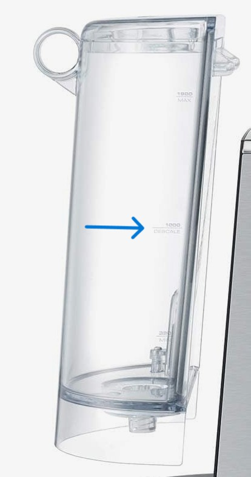

DescaleClean & descale
Dissolves limescale inside the machine. The Bambino has no separate cleaning cycle: this one does both.
Due when 1 CUP + STEAM take turns with 2 CUP.
Takes about 25 min. Just made coffee? Add up to 20 min for it to cool first.
Due when 2 CUP keeps blinking.
Takes about 25 min.
You need

Leave the tank and drip tray in while it runs. Pulling them out mid-cycle can let out hot steam. The tank only comes out at the pause, to refill.
Both cleaning and descale due? Descale first, rinse the tank, then run the cleaning cycle with fresh water.
Steps
You're only needed at the start, once halfway to refill, and at the end.
- Turn the machine off (1 CUP + STEAM).
Just made coffee? It needs to cool first. Do the next two steps meanwhile, then check the metal around the handle feels cool (up to 20 min). Already cold? Carry straight on.
- Empty the drip tray and put it back. Set the bowl under the group head and the steam wand.
- Take out the water filter if you use one. Fill the tank to the DESCALE line (the 1000 mark) and stir in the powder.

- Hold 1 CUP + STEAM for 5 s while it's off. Those two light up.
- Press 1 CUP or STEAM to start. They take turns flashing the whole time.
- It pauses when the tank runs out. Refill to MAX with plain water, empty the bowl, put both back.
- When 1 CUP and STEAM light up again, press either one to start the rinse.
- Done when the lights go out (standby). Empty the bowl, rinse and dry the tray and tank, put the filter back.
All done. Back to coffee. Cleaning light flashing too? Cleaning steps
Steps
You're only needed at the start, once halfway to refill, and at the end.
- Empty the drip tray and put it back.
- Fill the tank to the DESCALE line and stir in the descaling powder.
- Set the bowl under the group head and the steam wand.
- Hold 2 CUP + STEAM for 5 s to start. 2 CUP flashes the whole cycle.
- It pauses when the tank runs out. Rinse the tank, refill to MAX, empty the bowl, put both back.
- Press 2 CUP to rinse.
- Done when 2 CUP stops flashing. Empty the bowl, rinse and dry the drip tray and tank.
All done. Back to coffee.
Questions
How often should I descale?
Follow the light: the manual gives no fixed schedule. Hard water means more often. Slow flow, weak steam or lukewarm coffee are early signs.
Can I use vinegar or citric acid?
No. Breville says not to use vinegar, and to use only a descaler made for the machine. Kitchen citric acid isn't one either. Breville / Sage descaler, or another espresso machine descaler, is the safe choice.
My machine doesn't react to that button combo
These steps are from the current BES450 manual. Older units can differ: check the manual that came with yours, or Breville's descale video (linked at the bottom).